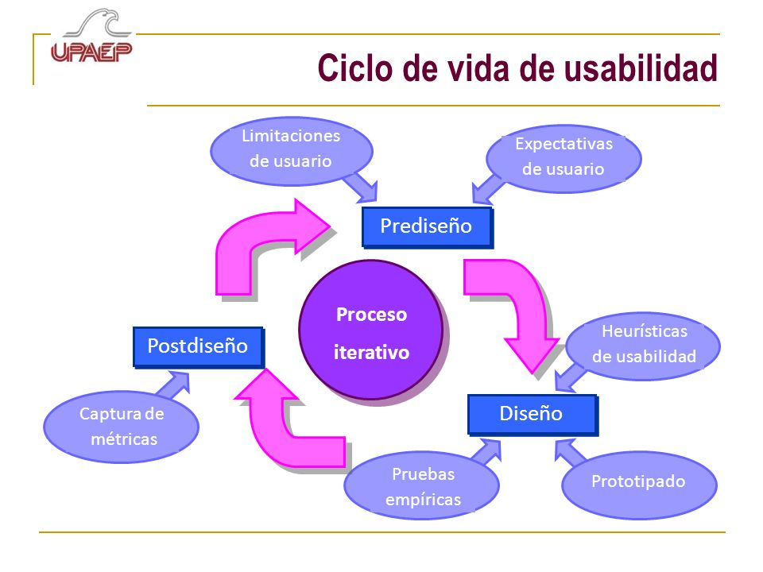

La usabilidad se refiere a la facilidad con la que los usuarios pueden aprender a usar un producto y su eficiencia al utilizarlo.
La usabilidad se refiere a la facilidad con la que los usuarios pueden interactuar con un sistema o producto para alcanzar sus objetivos. Incluye aspectos como la eficiencia, la eficacia y la satisfacción del usuario. Un sistema usable permite a los usuarios realizar tareas de manera rápida y sin errores, proporcionando una experiencia positiva. Las nociones básicas de usabilidad se centran en la comprensión de las necesidades y expectativas de los usuarios, así como en la creación de interfaces intuitivas y fáciles de usar.
Para poder comprender y ampliar más este campo pondremos a su disposicion el siguiente video
Usabilidad y accesibilidad son conceptos relacionados pero distintos. Mientras que la usabilidad se enfoca en la facilidad de uso para cualquier usuario, la accesibilidad se refiere a la capacidad de un sistema o producto para ser utilizado por personas con diversas discapacidades. Esto incluye aspectos como la adaptabilidad a diferentes dispositivos de asistencia, el uso de colores adecuados para personas con daltonismo y la implementación de descripciones textuales para imágenes para usuarios con discapacidades visuales. La accesibilidad garantiza que todos los usuarios, independientemente de sus limitaciones, puedan interactuar eficazmente con el sistema.
| Aspecto | Usabilidad | Accesibilidad |
|---|---|---|
| Definición | La facilidad con la que los usuarios pueden interactuar y alcanzar sus objetivos con un sistema o producto. | La capacidad de un sistema o producto para ser utilizado por personas con diversas discapacidades. |
| Objetivo Principal | Mejorar la eficiencia, eficacia y satisfacción del usuario. | Garantizar el acceso y la funcionalidad para todos, incluyendo personas con discapacidades. |
| Foco de Atención | Interacción general de todos los usuarios con el sistema. | Inclusión de personas con discapacidades específicas (visual, auditiva, motora, cognitiva). |
| Métodos de Evaluación | Pruebas de usuario, encuestas, análisis heurísticos, métricas de rendimiento. | Validaciones de conformidad con normas (como WCAG), pruebas con usuarios con discapacidades, revisiones técnicas. |
| Herramientas Utilizadas | Software de pruebas de usabilidad, herramientas de análisis de comportamiento de usuario. | Herramientas de validación de accesibilidad, tecnologías de asistencia (lectores de pantalla, etc.). |
La ingeniería de usabilidad es un enfoque sistemático para diseñar y evaluar productos que sean fáciles de usar. Combina principios de psicología, diseño y tecnología para crear sistemas que satisfagan las necesidades del usuario de manera efectiva. Este campo abarca desde la investigación inicial del usuario hasta las pruebas y la implementación de mejoras basadas en los resultados de dichas pruebas. La ingeniería de usabilidad no solo se centra en el diseño de interfaces, sino también en la mejora continua del producto a lo largo de su ciclo de vida.
El ciclo de vida de la ingeniería de usabilidad es un proceso iterativo que incluye varias fases: investigación, diseño, prototipado, pruebas y evaluación, y mejora continua. En la fase de investigación, se recogen datos sobre los usuarios y sus necesidades. En la fase de diseño, se crean conceptos y prototipos basados en esta información. Los prototipos se prueban con usuarios reales para identificar problemas y oportunidades de mejora. Finalmente, se realizan ajustes y se implementan mejoras basadas en los resultados de las pruebas, repitiendo el ciclo según sea necesario para garantizar un producto final óptimo.
Los métodos de evaluación de usabilidad son técnicas utilizadas para medir y analizar la efectividad, eficiencia y satisfacción del usuario con un sistema o producto. Algunos métodos comunes incluyen pruebas de usuario, donde se observa a los usuarios mientras interactúan con el sistema; encuestas y cuestionarios para recopilar feedback directo; y análisis heurísticos, donde expertos en usabilidad evalúan el sistema basándose en principios establecidos. Estos métodos ayudan a identificar problemas de usabilidad y proporcionan información valiosa para mejorar el diseño del producto.
Para comprender a fondo este concepto podemos apoyarnos del siguiente video.
El diseño web centrado en el usuario es un enfoque que pone a los usuarios en el centro del proceso de diseño. Este método se basa en comprender profundamente las necesidades, comportamientos y objetivos de los usuarios, y utilizar esta información para crear sitios web que sean intuitivos y fáciles de navegar. Involucra técnicas como la creación de personas, la realización de pruebas de usabilidad y la implementación de feedback continuo. Un diseño web centrado en el usuario no solo mejora la experiencia del usuario, sino que también puede aumentar la satisfacción del cliente y la efectividad del sitio web en lograr sus objetivos.